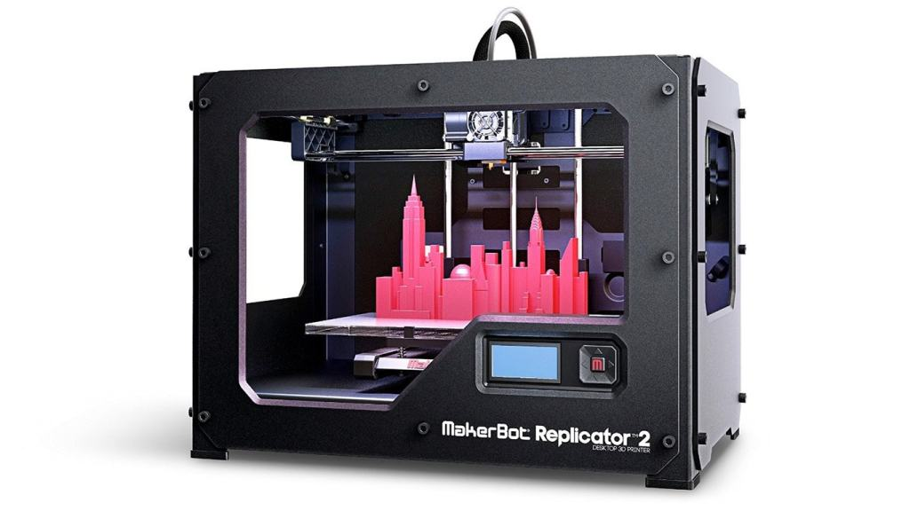
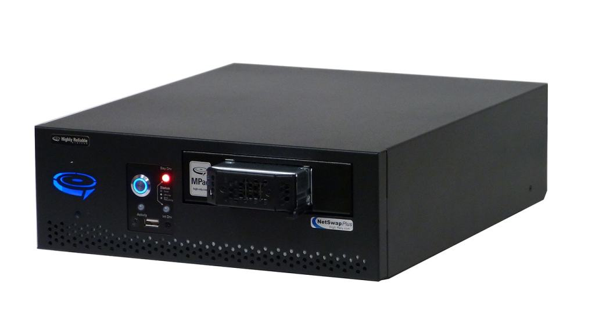

How Technology Started

The reason why technology is given more importance is that it has changed the way we progress. No doubt from generation to generation, we only made our life better but when we invented modern technology we changed our perception of advancement forever. It was thought that we needed more time to see significant results, but this is not the case anymore. Modern technology is making us question everything we know about making progress. Technological progress changes our life significantly, which is why it is important for us to understand it better. So, let’s start our discussion with how technology evolved.
Evolution of technology
Technology has been evolving since the very beginning. But, here, we will be focusing on modern technology to learn how it started. Each century came with the invention of new technology that made our everyday life easier. Now let’s look at a few technologies and the benefits they provided.
Technology invented in the 18th century
In the 18th century, many technologies such as submarines, cotton gin, and lightning rods were invented. The submarine invented at that time was nothing like today’s submarine. But the concept of going underwater and traveling lead to this invention. The story behind the invention of the first submarine is more interesting. Basically, it was invented so that it could be used to deliver time bombs or mines to enemy vessels in wartime.
Technology invented in the 19th century
In the 19th century, we saw inventions that became the foundation of the technology that we have today. Space rockets, heat engines, digital cameras, telephones, fax machines, typewriters, cars, and many such technologies were invented. In this century, we figured out the theory of space rockets. We made the first electric batteries. The paper-making machine was developed. Based on chemical technology, the primitive fax machine was developed. In addition to this, many basic laws of electromagnetic were set and the theory of the conservation of energy was outlined.
Technology invented in the 20th century
Then came the 20th century, when more new technologies were invented. We were able to send radio wave signals across countries. The everyday technology that we use today was developed in this century in the primitive form. Take examples of vacuum cleaners, air conditioners, microwave ovens, and cloth washers, all these were invented at this time. By the time we reached the late 20th century, we had most of the technology that could transform our lives in the next century. We had satellites, computer graphics, electronic books, cell phones, e-commerce, wireless internet, and many more.
Technology invented in the 21st century
We live in the 21st century when we have almost every technology to live a simple life. Our century started with the inventions of MP 3 players that changed the way we listen to music. Now, we have robots that can perform household chores. Technology like computers, laptops, smartphones, are easily available to anyone. We are making advancements and developing technology that can function like human brains. One such example is neural networks, which recognize patterns and make decisions, just like we humans do.
Start of modern technology
Internet is the very foundation of modern technology. And, it is so important that without it, we wouldn’t have been able to achieve most of what we have now. Before the late 20th century, it took more time to find solutions for the problems. But, this is not the case anymore. Today we are more connected globally than we ever were. The perk of global technology is that finding solutions to problems has become easier.
The future is going to be all about modern technology such as artificial intelligence, big data, augmented reality, virtual reality, and blockchains. Our life can change significantly as these technologies have transformative powers. Every industry will experience drastic changes once these are implemented on a wider scale. Let’s discuss them in detail.
Artificial intelligence
This technology is about building machines that can perform tasks like us, humans. In fact, we have different types of artificial technology. It is classified based on the tasks that they are designed to complete. We have generalized AI and applied AI. Generalized AI is about developing the intelligence of machines so that they turn their hands to different tasks, whereas applied AI is focused on carrying out specific tasks.
Big data
Big data is the reason why companies like Google are doing well. If it was not for big data, big companies would not have been able to generate profits like they do today. It allows businesses to acquire customers through advertising. If you searched for some website, then you are more likely to find ads related to it on your browser. It tracks our habits and accordingly recommends products and services.
Augmented and Virtual reality
Training directly in the real world can be dangerous in some sectors. This is why we have the virtual reality that eliminates the risks associated with it. Virtual environments allow individuals to practice and develop their skills, which they can apply in the real world. Technology such as AR and VR is going to be the focus of industries to train their staff. It will help them to reduce the training costs and eliminate potential risks.
Blockchain
This technology has made keeping records of transactions simpler. Earlier using the simple database, we could only get limited information but with blockchain, we can check the whole history. The best part about blockchain is that it is decentralized, which means it is more secure. By using such technology, different sectors can invest their time, efforts, and resources in making progress.
Conclusion
In this discussion, we learned how early technology changed our today’s world for the good. And, how modern technology is going to change the future for the better. You might
How Technology Started

Modern Technology and Social Life

Modern Technology in Agriculture

Modern Technology in Medicine

3D-Printers
Advantages-and-Disadvantages-of-Computer
Advantages-and-Disadvantages-of-GPS
Advantages-of-Technology
Apps-to-Limit-Access
Architecture-Technology

Automated-Backup-Systems
have realized it took us centuries to make such advancements. But, today’s technology has the potential to bring transformational change in just a couple of decades. We don’t need to wait for more to see how things might turn out to be. We have the technology for this, too. Using them, we can visualize many possibilities of what our future could be like.